Proyecto 14 · Equipo 01 · Proyecto final
A quién sirve y qué resuelve.
En el área metropolitana de Monterrey, buena parte de la canasta básica se vende en tianguis, puestos de mercado y tiendas de barrio que no tienen sistemas. AbastoRed les da una forma sencilla de llevar inventario y precios, pedir mercancía a proveedores mayoristas y saber qué les conviene surtir. Con esos mismos datos, el municipio ve en qué zonas falta acceso a productos básicos.
Inventario, ventas, precios y pedidos de abasto desde el web o el teléfono, aun sin señal.
Catálogo, pedido mínimo, zonas de entrega, equipo de operadores y entregas con QR.
Cobertura territorial, brechas de surtido, comparación de precios y concentraciones comerciales.
Dónde encontrar un producto y a cuánto, sin crear cuenta.
24 microservicios, cada uno dueño de sus datos, detrás de un gateway HTTPS.
/ms/<servicio>/.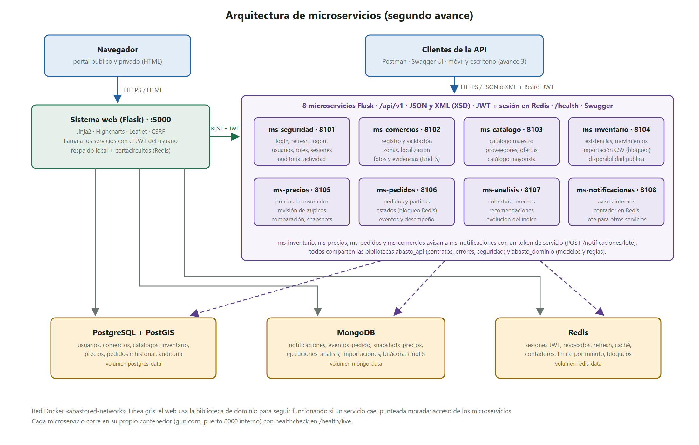
Tres clientes distintos, sobre las mismas APIs.
Sitio público y panel por rol: comerciante, proveedor, analista, coordinador, auditor y administrador.
Registro, inventario sin conexión con sincronización por lotes, escaneo de códigos de barras y QR de entrega, ubicación, cámara, abasto recomendado y avisos en segundo plano.
Solo XML validado con los XSD de cada servicio. Análisis, catálogo, zonas, exportación a CSV/PDF e instalador MSI.
El sistema completo corre en Compute Engine. Esta página solo lo presenta: Ubiquitous no ejecuta contenedores.
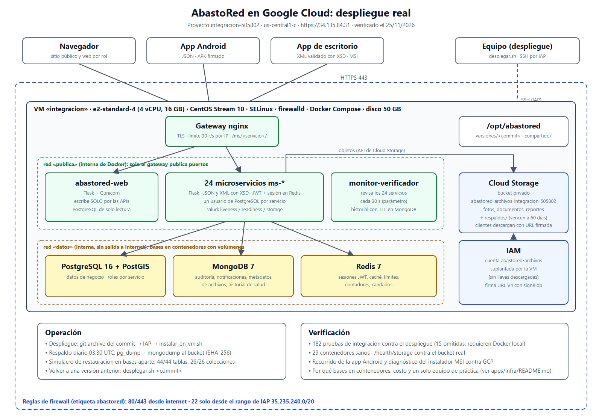
https://34.135.84.31. Las apps móvil y de escritorio
confían solo en ese certificado: no aceptan cualquiera.
Resultados medidos el 25/11/2026 contra el despliegue en Google Cloud.
El detalle de cada prueba está en docs/evidencias/ del repositorio.
Capturas reales del sistema.
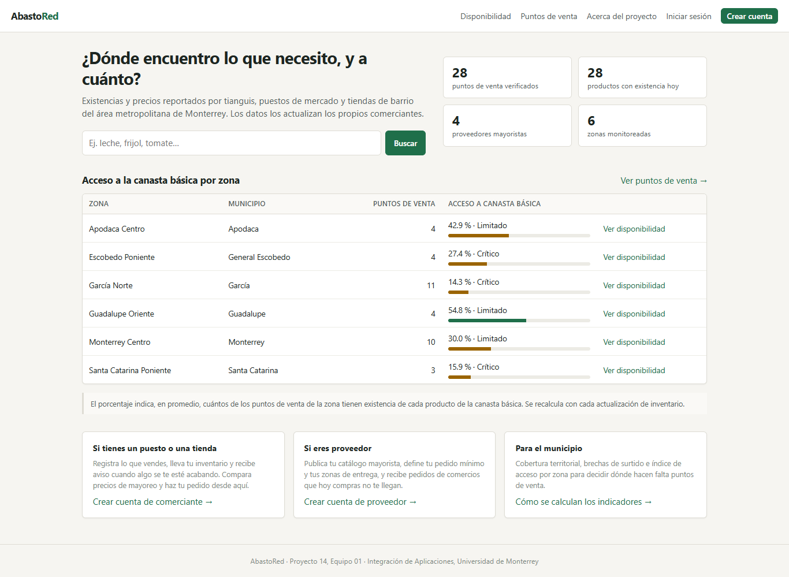
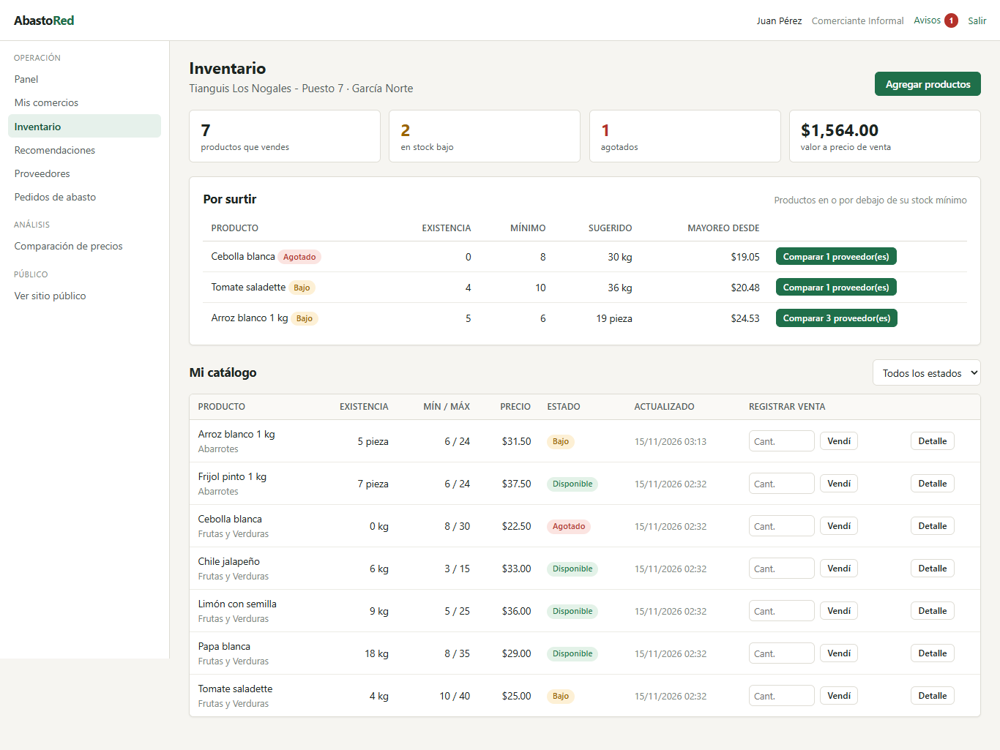
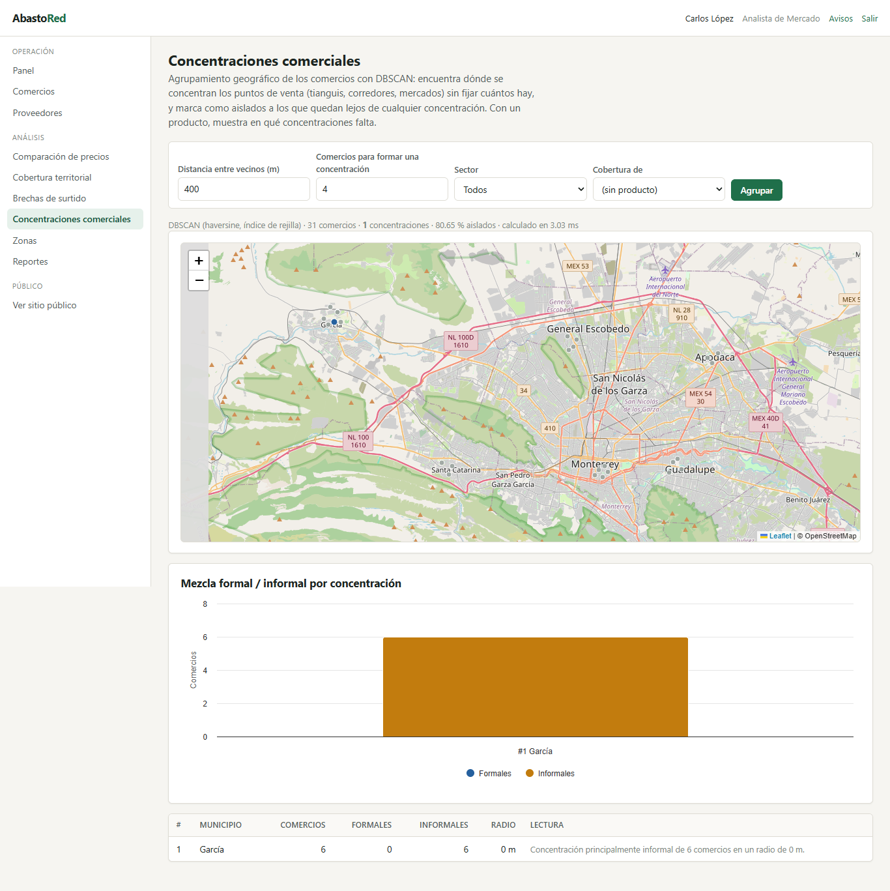
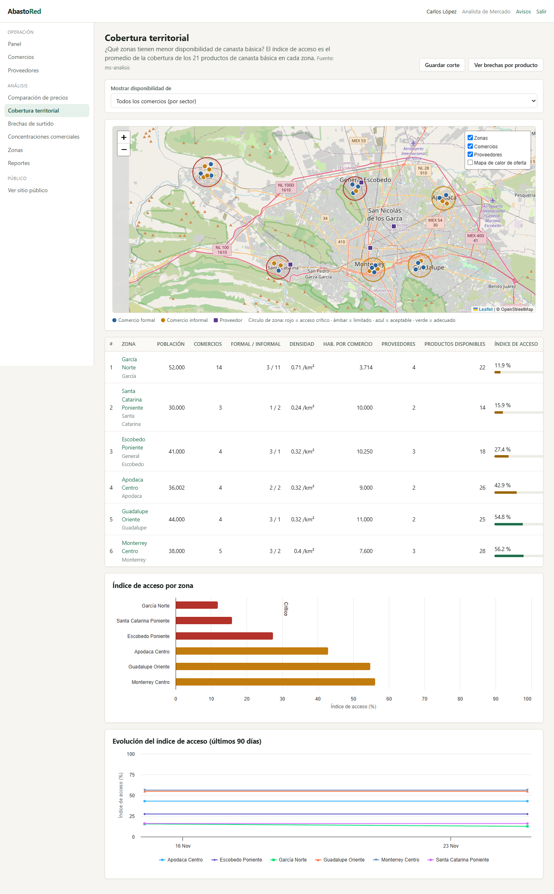
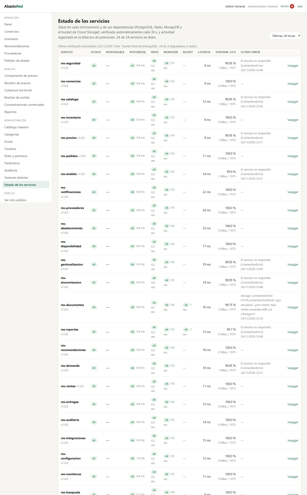
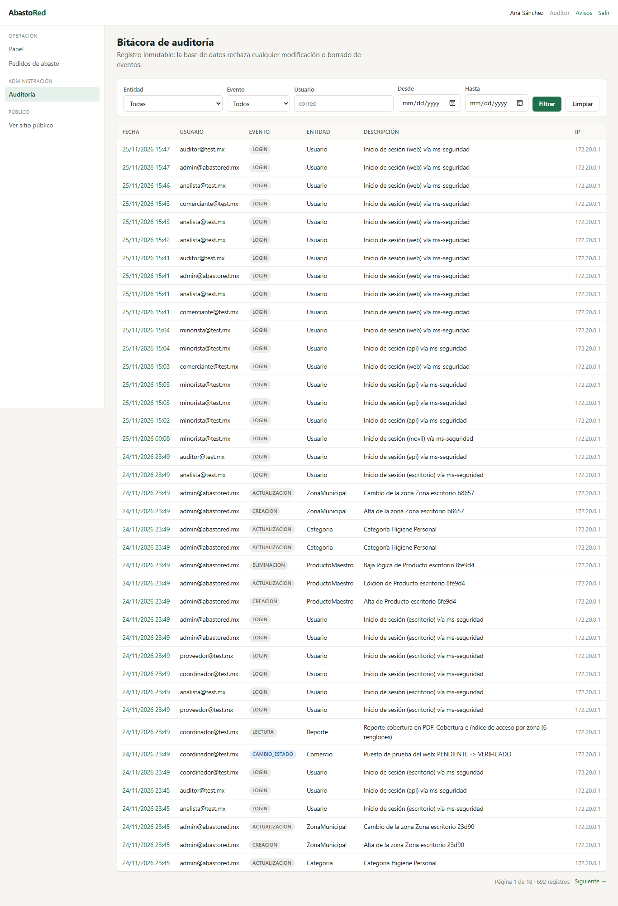
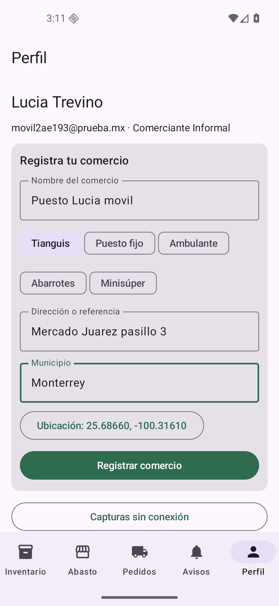
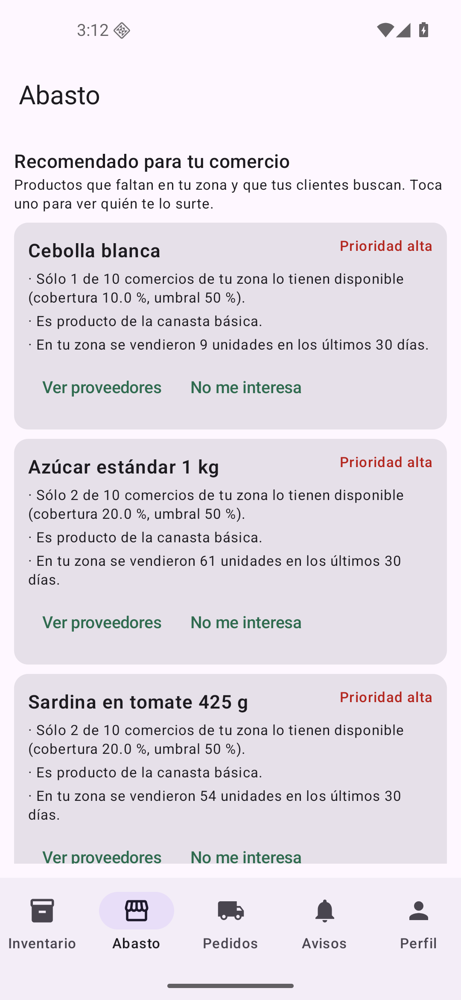
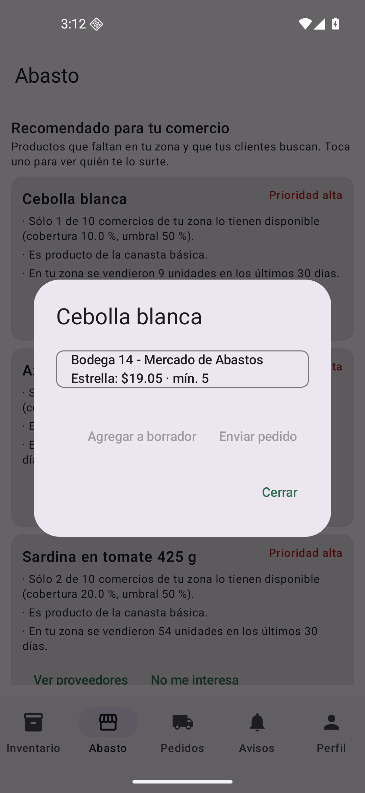
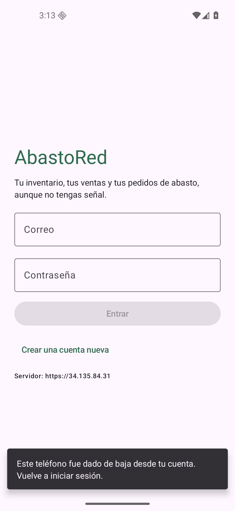
| Integrante | Matrícula |
|---|---|
| José Humberto Moreno | 596055 |
| David López | 600390 |
| Mauro Montelongo | 595821 |
| Humberto Alejandro Vargas Sánchez | 604775 |